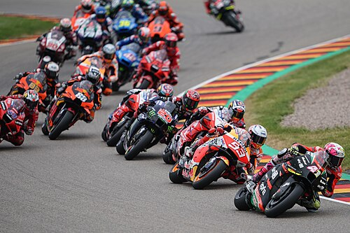
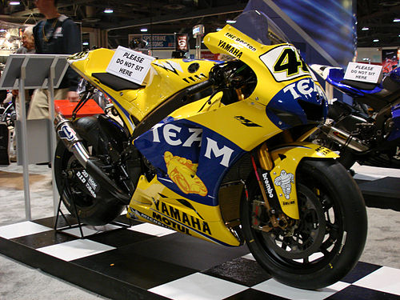
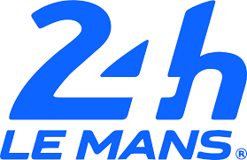

Grand Prix motorcycle racing is the highest class of motorcycle road racing events held on road circuits sanctioned by the Fédération Internationale de Motocyclisme (FIM). Independent motorcycle racing events have been held since the start of the twentieth century and large national events were often given the title Grand Prix. The foundation of the Fédération Internationale de Motocyclisme as the international governing body for motorcycle sport in 1949 provided the opportunity to coordinate rules and regulations in order that selected events could count towards official World Championships. It is the oldest established motorsport world championship.
Grand Prix motorcycles are purpose-built racing machines that are unavailable for purchase by the general public and unable to be ridden legally on public roads. This contrasts with the various production-based categories of racing, such as the Superbike World Championship and the Isle of Man TT Races that feature modified versions of road-going motorcycles available to the public. The top-division is known as MotoGP since 2002, when the four-stroke era began. Prior to that, the largest class was 500cc, both of which form a historical continuum as the official World Championship, although all classes have official status.
The championship is divided into four classes: the eponymous MotoGP, Moto2, Moto3 and MotoE. The first three classes use four-stroke engines, while the MotoE class uses electric motorcycles.
The most successful rider in Grand Prix history is Giacomo Agostini with 15 titles and 122 race wins. In the top-flight series, Agostini holds the title record with eight, followed by Valentino Rossi with seven and active rider Marc Márquez with six. As of 2023, Rossi holds the record for most top-flight race wins with 89.

History
An FIM Road Racing World Championship Grand Prix was first organized by the Fédération Internationale de Motocyclisme in 1949. The commercial rights are now owned by Dorna Sports, with the FIM remaining as the sport sanctioning body. Teams are represented by the International Road Racing Teams Association (IRTA) and manufacturers by the Motorcycle Sport Manufacturers Association (MSMA). Rules and changes to regulations are decided between the four entities, with Dorna casting a tie-breaking vote. In cases of technical modifications, the MSMA can unilaterally enact or veto changes by unanimous vote among its members. These four entities compose the Grand Prix Commission.
There have traditionally been several races at each event for various classes of motorcycles, based on engine size, and one class for sidecars. Classes for 50cc, 80cc, 125cc, 250cc, 350cc, 500cc, and 750cc solo machines have existed at some time, and 350cc and 500cc sidecars. Up through the 1950s and most of the 1960s, four-stroke engines dominated all classes. In the 1960s, due to advances in engine design and technology, two-stroke engines began to take root in the smaller classes.
In 1969, the FIM—citing high development costs for non-works teams due to rules which allowed a multiplicity of cylinders (meaning smaller pistons, producing higher revs) and a multiplicity of gears (giving narrower power bands, affording higher states of tune)—brought in new rules restricting all classes to six gears and most to two cylinders (four cylinders in the case of the 350cc and 500cc classes).
This led to a mass walk-out of the sport by the previously highly successful Honda, Suzuki and Yamaha manufacturer teams, skewing the results tables for the next several years, with MV Agusta effectively the only works team left in the sport until Yamaha (1973) and Suzuki (1974) returned with new two-stroke designs. By this time, two-strokes completely eclipsed the four-strokes in all classes. In 1979, Honda, on its return to GP racing, made an attempt to return the four-stroke to the top class with the NR500, but this project failed, and, in 1983, even Honda was winning with a two-stroke 500.
Previously, the championship featured a 50cc class from 1962 to 1983, later changed to an 80cc class from 1984 to 1989. The class was dropped for the 1990 season, after being dominated primarily by Spanish and Italian makes. It also featured a 350cc class from 1949 to 1982, and a 750cc class from 1977 to 1979. Sidecars were dropped from world championship events in the 1990s (see Sidecar World Championship).

24h of Le Mans - Motos

The 24 Hours of Le Mans (French: 24 Heures du Mans) is an endurance sports car race held annually near the city of Le Mans, France. It is widely considered to be one of the world's most prestigious races, and is one of the races—along with the Monaco Grand Prix and Indianapolis 500—that form the Triple Crown of Motorsport, and is also one of the races alongside the 24 Hours of Daytona and 12 Hours of Sebring that make up the informal Triple Crown of endurance racing. Run since 1923, it is the oldest active endurance racing event in the world.
Unlike fixed-distance races whose winner is determined by minimum time, the 24 Hours of Le Mans is won by the car that covers the greatest distance in 24 hours. The cars on this track are able to achieve speeds of 366 km/h (227 mph), and reached 407 km/h (253 mph) on the Mulsanne Straight in 1988 instigating the addition of more chicanes to the track to reduce speed reached. Racing teams must balance the demands of speed with the cars' ability to run for 24 hours without mechanical failure. The race is organized by the Automobile Club de l'Ouest (ACO). It is held on the Circuit de la Sarthe, composed of closed public roads and dedicated sections of a racing track.
The 24 Hours of Le Mans was frequently part of the World Sportscar Championship from 1953 until that series' final season in 1992. In 2011, it was a part of the Intercontinental Le Mans Cup. Since 2012, the race has been a part of the FIA World Endurance Championship. A 10-hour American version of the race, called Petit Le Mans, has been held annually since 1998.
History
When the Bol d'Or moved from Bugatti Circuit to Circuit Paul Ricard at the end of 1977, the ACO created the 24 Heures Moto. The race became one of "the classics" of endurance racing along with the 24 Hours of Liège, the 8 Hours Of Suzuka, and the Bol d'Or.
At the end of 2001, the three 24 Hour classic races (Le Mans, Liège and the Bol d'Or) withdrew from the Endurance World Championship to create the Master of Endurance. Le Mans returned to the Endurance FIM World Championship in 2006.